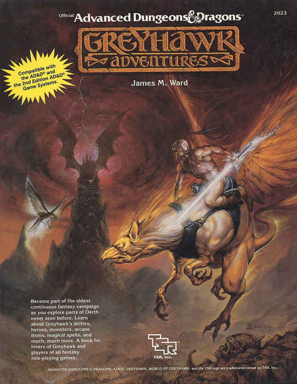

封面 · Cover

灰鹰冒险
Greyhawk Adventures
James M. Ward
兼容 AD&D® 与第二版 AD&D® 游戏系统。
探索奥斯从未见过的区域，成为最古老、持续至今的奇幻战役的一员。了解灰鹰的神祇、英雄、怪物、奥术物品、魔法，以及更多更多内容。一本献给灰鹰爱好者和所有奇幻角色扮演游戏玩家的书。

Greyhawk Adventures
James M. Ward
兼容 AD&D® 与第二版 AD&D® 游戏系统。
探索奥斯从未见过的区域，成为最古老、持续至今的奇幻战役的一员。了解灰鹰的神祇、英雄、怪物、奥术物品、魔法，以及更多更多内容。一本献给灰鹰爱好者和所有奇幻角色扮演游戏玩家的书。